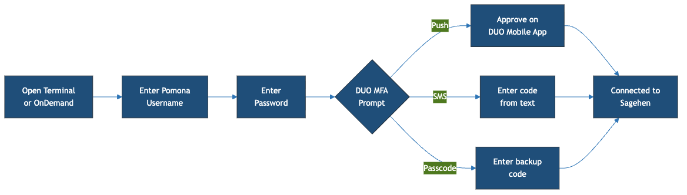
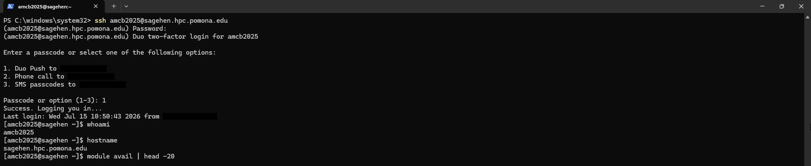
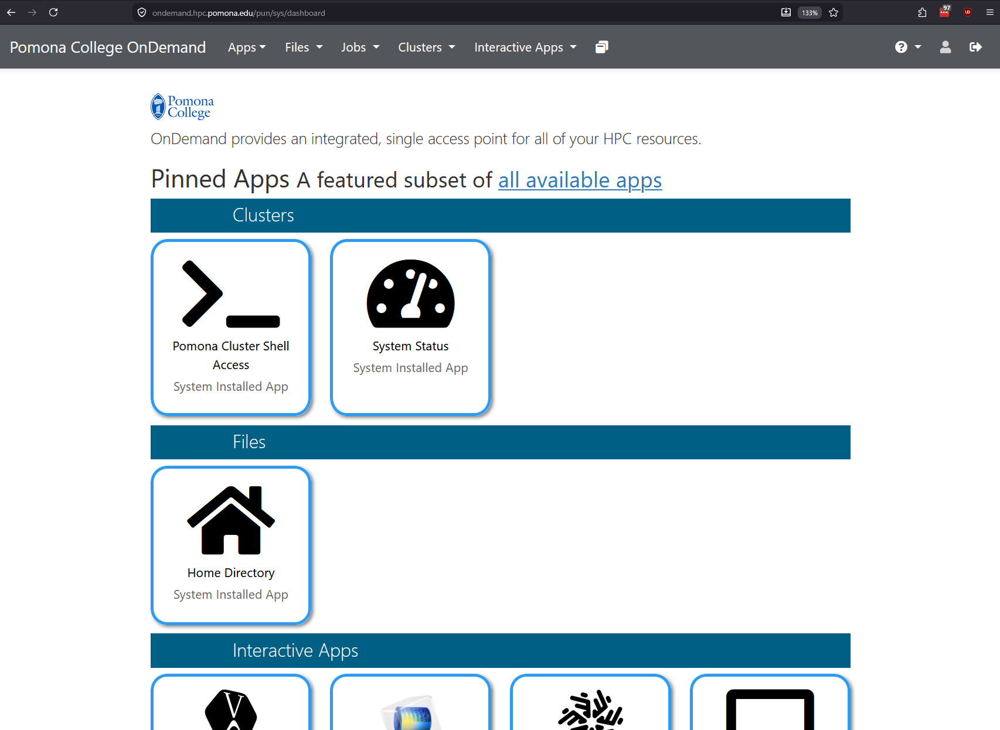
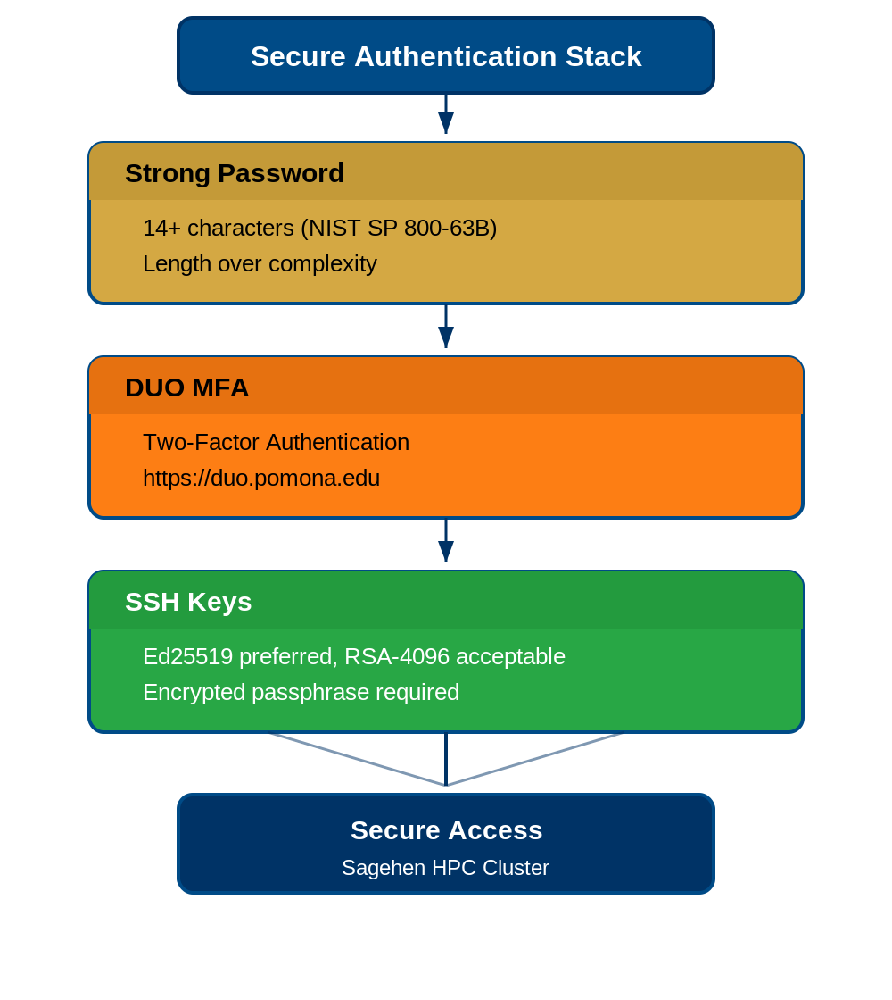

Connecting to Sagehen
Last updated on 2026-08-24 | Edit this page
Estimated time: 30 minutes
Overview
Questions
- How do I connect to Sagehen using SSH?
- How do I set up SSH on my operating system?
- What is the OnDemand web portal?
Objectives
- Understand SSH (Secure Shell) and its role in remote access
- Set up SSH access on macOS, Linux, and Windows
- Know how to use the OnDemand web portal as an alternative
- Perform your first successful login to Sagehen
What is SSH?
SSH (Secure Shell) is a cryptographic network protocol that lets you securely connect to a remote computer and run commands as if you were sitting at that machine.
Why SSH?
- Encryption: All data between your computer and Sagehen is encrypted
- Authentication: Confirms you are who you claim to be (via password + DUO)
- Remote execution: You can run commands on Sagehen from your local machine
- Tunneling: Advanced users can forward network ports for additional security
SSH is the standard protocol for accessing HPC clusters worldwide.
Setting Up SSH Access
On macOS and Linux
macOS and Linux include SSH built-in. Open a terminal and connect:
Step 1: Open Terminal - macOS: Applications > Utilities > Terminal (or Cmd+Space, type “Terminal”) - Linux: Ctrl+Alt+T (most distributions)
Step 2: Connect to Sagehen
Step 3: Accept the Host Key
On your first connection, you’ll see a prompt asking you to verify
the host. Type yes and press Enter.
On Windows with PuTTY
- Download PuTTY from https://www.putty.org/
- In “Host Name”, enter:
sagehen.hpc.pomona.edu - Leave “Port” as 22
- Click “Open”
- Accept the host key and enter your username
On Windows with WSL
WSL provides a native Linux environment. After installing
(wsl --install in PowerShell as Administrator), use the
standard SSH command.
Choosing an SSH Client
- macOS/Linux users: Use the built-in Terminal application
- Windows 10+ users: Use PowerShell (simplest) or WSL (most Linux-like)
- Prefer graphical interface: Use PuTTY
- Advanced users: Use SSH config files or terminal multiplexers (tmux, screen)
DUO Two-Factor Authentication
When you connect, Sagehen requires DUO authentication at https://duo.pomona.edu.

After entering your Pomona password, you’ll see a DUO prompt:
- Option 1: Push (recommended) – approve the notification on your phone
- Option 2: SMS – enter the 6-digit code texted to you
- Option 3: Backup Code – enter a pre-generated backup code

whoami and
hostname.If DUO fails, contact Pomona IT Help Desk: (909) 621-8061 or servicedesk@pomona.edu.
The OnDemand Web Portal
If you prefer not to use SSH, access Sagehen through a web browser:
URL: https://ondemand.hpc.pomona.edu/
You’ll sign in with your Pomona credentials (the same Microsoft sign-in page used for other campus services):

After signing in and completing DUO, you’ll land on the OnDemand dashboard:

Logging Out
When you’re done, disconnect from Sagehen:
Or press Ctrl+D.
Important Security Notes
- Never share your password with anyone, including IT staff
- Close your connection when done; don’t leave it running all day
- SSH keys: Ed25519 is recommended; RSA-4096 is acceptable
- DUO is required: You cannot bypass two-factor authentication

Challenge 1: Your First SSH Connection
If you see [<myusername>@sagehen ~]$ and the
verification commands produce correct output, you’re connected.
Common errors:
- “Permission denied”: verify your username (not email) and password
- “DUO authentication failed”: ensure Duo Mobile is updated; try SMS
- “Connection timeout”: check internet; try a different network
- SSH (Secure Shell) is the standard for securely connecting to remote computers
- macOS and Linux include SSH built-in; Windows users can use PowerShell or PuTTY
- DUO two-factor authentication is required; push notification is fastest
- OnDemand (https://ondemand.hpc.pomona.edu/) provides a graphical alternative to SSH
- Always log out when done with
exitor Ctrl+D